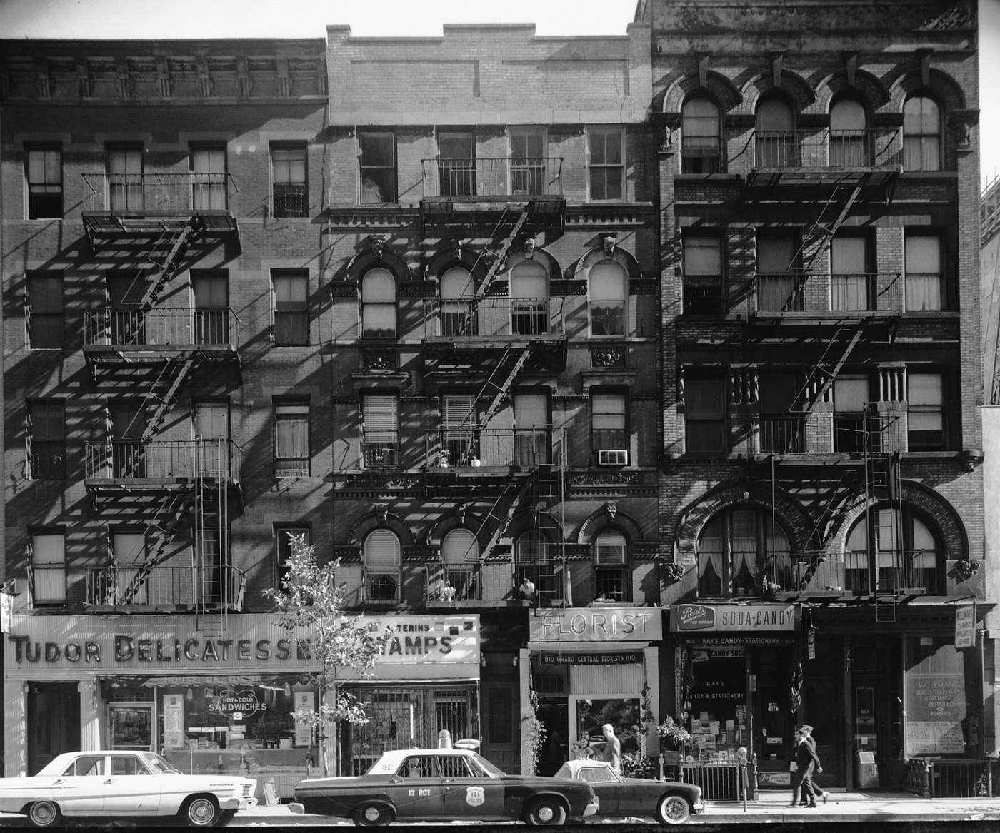
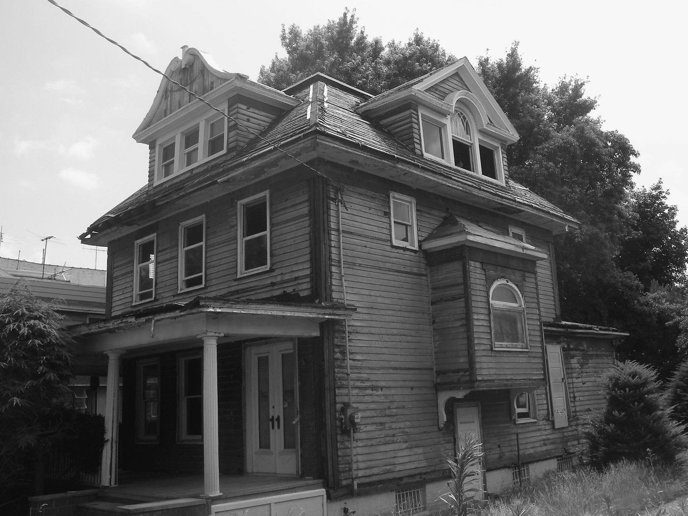

About 72 percent of the buildings that have stood in Manhattan since 1889 are gone. This project tests the usual explanations against the city's own records.
This is Manhattan today. Each white speck is one of its 44,603 standing buildings.
Since 1889, about 116,000 other buildings on the island have been torn down.
Each black square stands for 5 buildings. Most demolished buildings were never mapped, so the squares show how many, not where.
Of the roughly 161,000 buildings that have stood on the island since 1889, about 28 percent remain.
Estimates range from 26 to 29 percent, depending on how buildings from the 1890s are counted. Here the standing buildings are redrawn at the same 5 buildings per square.


To find out, this project followed the full demolitions the city permitted from August 2002 to January 2026 in all five boroughs: 30,540 of them on lots with a building on record.
From here on, the numbers are citywide.
Old buildings wear out. If age drove demolition, the oldest buildings would come down fastest.
They don't. Buildings from before 1900 were torn down less often than buildings from 1900 to 1929.
The median demolished building was 85 years old. The median age of all the city's buildings over those years was 80.
Age isn't innocent. Buildings from 1960 on came down at less than half the rate of older ones.
But most of the city's buildings are old, and most old buildings stay up. Age doesn't explain most demolitions.
Fires, collapses and neglect bring buildings down too. Each full demolition filed from 2015 to 2025 was checked against the city's records of damage and danger.
Only 7.7 percent of 16,809 demolitions had one: an unsafe-building or emergency violation in the three years before the filing, a city vacate order for fire damage or unlivable conditions, or a filing that describes fire, collapse, storm damage or an emergency.
Records miss some damage, so 7.7 percent is a floor. Each square is 1 percent of the demolitions.
Every lot in New York comes with a limit on how much floor space can be built on it. Planners write the limit as a floor area ratio, or FAR.
Take a brownstone of the kind found across Brooklyn and Manhattan: four stories, built around 1900.
Its lot is 20 feet wide and 100 feet deep. That makes 2,000 square feet of land.
Each of its four floors is 20 by 50 feet, or 1,000 square feet. Together they hold 4,000 square feet.
Divide the floor area by the lot area and you have the FAR: 4,000 ÷ 2,000 = 2.0.
Now suppose the zoning here allows a FAR of 4.0. The lot could hold 8,000 square feet, the equivalent of four more floors. The house uses half of its allowance.
To a buyer who wants to build, those 4,000 unbuilt square feet can be worth more than the house. Getting at them usually means tearing the house down.
On a block where the limit is 2.0, the same house already uses everything it is allowed. There is nothing more to build, and far less reason to knock it down.
Back to the evidence. Here are the demolition rates by building age again.
Now the same rate, grouped by how much of its allowed floor area each lot was using, on the same scale.
Lots using less than a quarter of their allowance came down 41 times as often as lots at or past their limit.
Compared with lots of similar age, size, use, borough and landmark status, the odds were still about 18 times higher.
The new buildings constructed after a demolition fit the pattern. Whether a demolished lot had been using a fifth of its allowance or three-quarters of it, the median building that replaced it used all of it.
Among demolished lots with a new building on record a few years later (46 percent). About 20 percent had been merged into larger lots, 17 percent were still empty, and 16 percent still showed a building from before the demolition filing.
The limits are set by the city, and the city changes them. Rezonings adopted from 2003 to 2007 alone covered about 188,000 lots: 14 percent got a higher limit and 23 percent a lower one.
When a lot's limit went up, demolitions there rose about 2.2 times as fast as on lots the city left alone. The pattern held in each of six rounds of rezoning between 2006 and 2024.
95 percent interval: about 1.9 to 2.5. Each round compares a three-year period before a rezoning with one after it.
When the limit went down, the demolition rate fell to 0.68 times that of lots left alone.
Two cautions: the city tends to raise limits where it already expects growth, and to lower them after waves of teardowns. Both can make the effects look larger.
In December 2024 the City Council adopted City of Yes for Housing Opportunity. Between the city's 2024 and 2026 lot records, about 541,000 lots with buildings got a higher limit, most of them through it.
If past patterns hold, this project's model expects about 4,300 demolitions over three years under the new limits, against about 2,500 under the old ones. The rules are too new to test.
Each of the 804,166 lots with a building in the five boroughs is scored by how closely it resembles lots demolished in the past. Unused floor area carries the most weight; age, size, use, borough, landmark status and recent rezonings adjust it.
The score uses the limits in force before City of Yes, the version that could be tested. A version trained on demolitions from 2008 to 2020 put 60 percent of the 2020–23 demolitions, which it had never seen, in the riskiest tenth of lots. Since January 2024, demolition has been filed for 2,555 scored lots; 47 percent were in that tenth.
A high score means a lot shares traits with past demolitions. It is not a forecast for any one building.
Standing buildings are the city's building footprints (main buildings; detached garages and sheds left out). The number that have stood since 1889 adds the 1889 count of every building on the island to the new buildings planned or filed each year after: an 1898 real-estate history for 1889–1899, the Office for Metropolitan History's index of new-building applications for 1900–1986, and Department of Buildings permits for 1989–2026. Demolished = everything that stood minus what stands. Applications are not completions, so the share standing is an estimate; reasonable choices for the 1890s give 26 to 29 percent.
Full demolitions from Department of Buildings job filings (BIS and DOB NOW) with a permit, matched by tax lot to the PLUTO lot file released about six months into each three-year window (eight releases, 2003 to 2024; the last window runs two and a half years, to January 2026). About 8 percent of permitted demolitions are left out because the lot could not be matched to a lot record with a building and a zoning limit; in the two latest windows, most of these lots already showed no building. Age is the year built on record, which is often rounded. FAR use is the lot's built floor area divided by the largest residential or commercial floor area its zoning allowed at the time.
For each demolished lot, the lot record released about three to six and a half years after the demolition was filed (demolitions filed through July 2023). Of 28,409 demolitions with a later record, 46 percent had a building built after the demolition period began, 20 percent had been merged into a larger lot, 17 percent were still empty, and 16 percent still showed a building with an earlier year built, about half of them with the same floor area as before; 1 percent had no year built on record. For the lots with a new building, the share of the allowance in use is built floor area divided by the larger of the residential or commercial limit: before, under the limit at the time of the demolition; after, under the limit on record when the new building appeared (it had changed on 25 percent of lots). Measured against the earlier limit, the medians after are 105 to 117 percent. Shares above 100 percent mostly reflect zoning bonuses and community-facility allowances, which the limit used here leaves out.
Permitted full demolitions filed 2015–2025, checked against DOB unsafe-building, emergency and structurally compromised violations issued up to three years before the filing (and 30 days after), HPD vacate orders for fire damage or habitability, and filing descriptions naming fire, collapse, storm damage or an emergency.
A weighted case-control logistic regression: all demolished lots and a 2 percent sample of the rest, weighted back to the full count. The rezoning test is a difference-in-differences: for lots with no zoning change in the previous round, it compares the change in demolition rates on rezoned lots with the change on lots left alone.
Each lot's score comes from the same model refit on demolitions filed from August 2011 to July 2023 and applied to the 2026 lot file, with the allowance as recorded in 2024. Tested out of time (trained on 2008–2020, tested on August 2020 to July 2023), it scored an AUC of 0.851, and its predictions ran about 20 percent high. The City of Yes figure applies the same model to the 2026 limits, which it was never trained on.
Demolition records are permits and filings, not confirmed completions. Lot records change between releases.